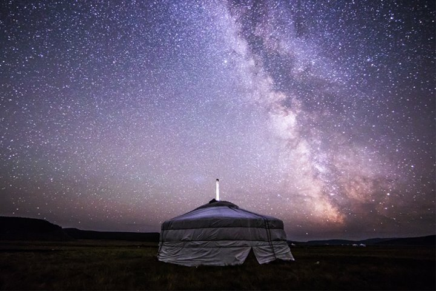
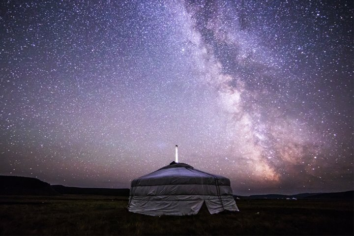

사막 체험하기

몽골 가면 반드시 꼭 가봐야 하는 곳이 있습니다. 바로 고비 사막이죠. 고비 사막에서 스마트폰은 무용지물이라 현실과 단절될 수 있죠. 사막 특유의 적적하고 쓸쓸한 분위기를 마음껏 느껴볼 수 있는데요. 고비 사막에서 제일 유명한 관광지는 모래 언덕 ‘홍고링 엘스’입니다. 올라가는 과정이 힘겹기는 하지만 올라가면 드넓은 사막이 한눈에 들어와 그 힘겨움을 잊게 해주죠.
시리즈여행
스마트인컴 ㆍ5만 팔로워
2020.02.13. 10:0053,167 읽음
몽골 가면 반드시 꼭 가봐야 하는 곳이 있습니다. 바로 고비 사막이죠. 고비 사막에서 스마트폰은 무용지물이라 현실과 단절될 수 있죠. 사막 특유의 적적하고 쓸쓸한 분위기를 마음껏 느껴볼 수 있는데요. 고비 사막에서 제일 유명한 관광지는 모래 언덕 ‘홍고링 엘스’입니다. 올라가는 과정이 힘겹기는 하지만 올라가면 드넓은 사막이 한눈에 들어와 그 힘겨움을 잊게 해주죠.
